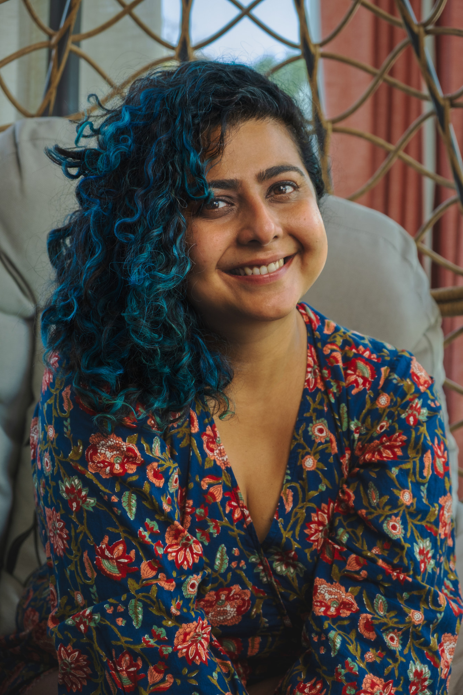
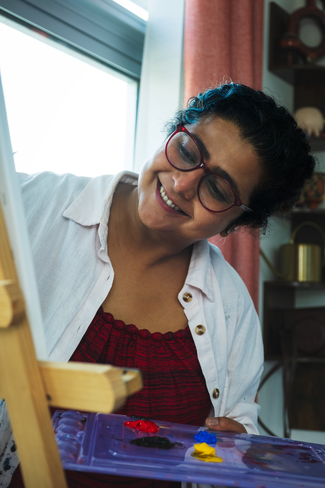

In a land far, far away, over a quarter of a century ago, a little girl was not just discovering her love for writing but more importantly finding a channel, a safe space to say what she couldn't speak. She'd scribble little poems and musings at the back of all her notebooks and diaries, which she had many. She started journaling when she was eight. Odd, considering no one in her family did.
She knew she was odd. She was sure by now.
She was also an avid reader, always hungry to read more (bookstores are still like Disneyland to me! And stationery stores! And art supplies stores! I digress). It was how she travelled many lands and lived many lives.
Once she left home for her engineering degree, at age 17, her writing practice was never the same again. Neither was her reading. The girl who never not had a book in her hand went months without reading a page. For a long time, there were hardly any environments that nurtured creativity.
But she never stopped scribbling her poems and ramblings. The backs of her now many, many, many notebooks and diaries still look much the same. But she also writes in the front now :)
Writing poetry was the first art form she ever practiced and now she's determined to write more, once again.
Read my poetryHello there! I'm Apeksha, a human and an artist. I'm also a late-diagnosed neurodivergent, immigrant, woman of color. Quite a mouthful, all those labels! They are so helpful but very often also another way for people to put you in a neat little box (you've already handed them the label for it). I don't like being put in a box. I believe these many ways of being different lend to a unique perspective — one that cannot be categorized in any single way.
I imagine these differences as additional complex layers which inform and compound each other, constantly shaping my experience of the world and its experience of me, not to mention my experience of myself in all of that.
I was diagnosed with ADHD a couple of years ago. It explained, with almost comic precision, every moment I had spent feeling like I was running software on the wrong operating system. I learnt I wasn't broken. I was never built for this life to begin with.
With the diagnosis, started the slow, uncomfortable work (at first) of reconnecting with my body. I realized I had spent most of my life tuning it out until it had to scream, overriding my instinct because my instinct was inconvenient, or too much, or didn't translate well into the language the room was speaking.
So I started listening again. And when I did, I got the itch to paint.
I had never painted before. A close friend offered her art supplies and we set up a paint date. I created my first abstract piece and something unlocked, something familiar and new at the same time. The same feeling I had known as a child with writing, a simultaneous pouring out and filling up. A physical release and a nourishing satisfaction.
A portal opened inside of me. I haven't stopped since.
But here's what I want to be clear about: the art was for me. It was a reclamation of instinct, of trust, of a self I had spent a lifetime managing into smallness. That part was personal and private and necessary.
What happened alongside it was that I started to understand something larger. Creativity is not a talent some people have. It is a human need. And the particular kind of relief I felt when I painted, the permission of being in a process with no right answer, the state of being, not becoming, that is where the magic happens.
I completed my Therapeutic Arts Practitioner Certification because I want other women running on fumes to experience what I experienced, a homecoming through creating art. I got trained not just for me but for every past version of me that I see in the women around.
That is what Art & Living is. Spaces where the point is not the product but the
process. Where there is no correct way to show up. Where the only instruction is to
follow what your body already knows.
I was the woman who carried too much. Now I help other women put it down.

Letters from the studio on creativity, neurodivergence, and what we're building together.
Join the circle